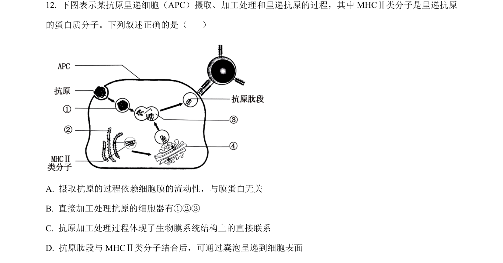
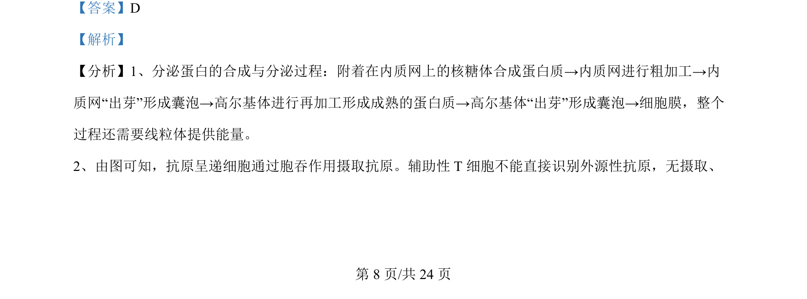
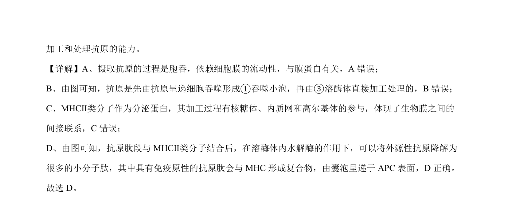

考点：免疫 抗原呈递 生物膜系统 细胞器

考查抗原呈递细胞通过胞吞摄取抗原、溶酶体加工及MHC II类分子经囊泡将抗原肽段呈递至细胞表面的过程。


📄 原 PDF 第 8 页：
素材/真题/吉林/2008-2024·（吉林）生物高考真题/2024年高考生物试卷（辽宁）（解析卷）.pdf
【答案】D 【解析】 【分析】1、分泌蛋白的合成与分泌过程：附着在内质网上的核糖体合成蛋白质→内质网进行粗加工→内 质网“出芽”形成囊泡→高尔基体进行再加工形成成熟的蛋白质→高尔基体“出芽”形成囊泡→细胞膜，整个 过程还需要线粒体提供能量。 2、由图可知，抗原呈递细胞通过胞吞作用摄取抗原。辅助性 T细胞不能直接识别外源性抗原，无摄取、